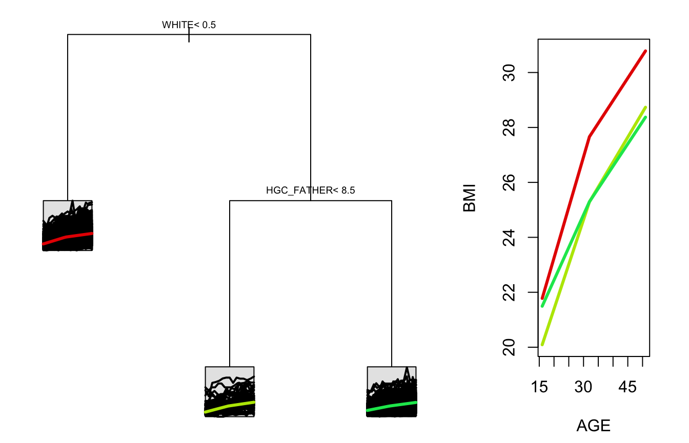

Introduction to splinetree
2018-08-21
Long-Intro.RmdThis vignette describes the motivation for the splinetree package and introduces the algorithms used by the package. For a more practical guide to working with data using the functionalities of the splinetree package, see the vignettes Tree Building with splinetree and Forest Building with splinetree.
Motivation
Longitudinal studies, where an outcome of interest is repeatedly measured in the same subjects over time, play a key role in research across a variety of disciplines, including medicine, epidemiology, and the social sciences. In these studies, the trajectory of the longitudinal outcome over time can look very different in different members of the population. It is often useful to find factors that help explain this variation in trajectory. We propose using longitudinal regression trees, specifically splinetree, to find population subgroups where group members follow similar longitudinal trajectories and share common covariate values. We also propose using spline forests to understand which covariates are most associated with the heterogeneity in trajectories.
Regression trees, which recursively partition a population into homogenous subgroups (nodes), are a promising approach to this problem, but many regression tree algorithms cannot be used for studying longitudinal trajectories. Longitudinal regression trees were first proposed by Segal (1992), who suggested minimizing within-node Mahalanobis distance of longitudinal response vectors. This method requires that all individuals in the sample have the same number of equally spaced measurements of the outcome, which is rarely the case in studies involving human subjects. Yu and Lambert (1999) eliminate this need for balanced data by reducing the dimension of the outcome vector using smoothing splines and then maximizing within-node homogeneity of the smoothed trajectories. The work of Yu and Lambert is the basis for the algorithm employed by splinetree.
Algorithm
The method for building a splinetree object, which is invoked with every call to the function splineTree(), consists of two steps. First, the longitudinal response vector for each individual in the dataset is projected onto a spline basis, yielding a set of coefficients for each individual. Second, the coefficients from the projection are used in constructing a regression tree that maximizes the within-node homogeneity of the projected trajectories.
Spline Projection
Yu and Lambert suggest treating each response vector as a functional curve \[Y_i(t) = f_i(t) + \epsilon_i(t)\] where \(f_i(t) = \sum_{k = 1}^q\beta_{ik} X_k(t)\) for a set of basis functions, \(X_k(t)\) and coefficient vector \(\boldsymbol{\beta}_i = (\beta_{i1},...,\beta_{iq})^T\), and where \(\epsilon_i(t)\) is white noise with mean zero and constant variance. The first step of splineTree() transforms the user-provided longitudinal dataset (in long format) into a wide format dataset where each individual is defined by their coefficient vector \(\boldsymbol{\beta}_i = (\beta_{i1},...,\beta_{iq})^T\). In the final regression tree, terminal nodes are labeled with predicted coefficient vectors \(\boldsymbol{\hat{\beta}} = (\hat{\beta}_{1},...,\hat{\beta}_{q})^T\). These predicted coefficients, along with the tree-wide basis functions \(X_k(t)\), describe the predicted trajectory for individuals whose covariate values place them in this node.
The splinetree package uses B-Splines (built using splines::bs()) for the basis functions \(X_k(t)\) and obtains the coefficients by regressing each individual’s longitudinal response on these common basis functions. Whereas the original dataset may have a non-constant number of observations per individual, the transformed dataset is balanced; each individual has the same number of coefficients, all of which correspond to a common set of basis functions.
A consequence of flattening the data in this way is that covariates used for splitting the tree cannot be time-varying. When splineTree() is called it expects a dataset in long format where split variables take on the same value in every row corresponding to a certain individual. In order to include information about time-varying covariates in the tree, new summary variables can be defined. For example, instead of including time-varying yearly income as a split variable, we could define a new time-constant variable for each individual such as starting income, average income, or average yearly increase in income.
One unique feature of the splineTree() function is that the user can specify whether or not the set of basis functions \(X_k(t)\) includes the intercept function. When the intercept is included, the splits of the tree take into account both the shape and the level of the longitudinal response trajectory, and the terminal nodes of the tree describe full trajectories that can be used for prediction. When the intercept is excluded, the splits of the tree take into account only the shape of the trajectories. In this case, the predicted coefficients for terminal nodes describe trajectories that begin with \(0\), which will typically not provide reasonable prediction values. To obtain rough predictions from intercept-less trajectories, the mean starting response for all individuals in the node can be added onto the trajectory after the fact as an estimated intercept.
The set of basis functions \(X_1(t), ..., X_q(t)\) is determined by parameters to the splineTree() function which are passed forward to the bs() function. The degree parameter, with default 3, specifies the degree of the spline basis. The boundary knots for the spline basis are set to be the minimum and maximum values that the time variable takes on in the dataset, and with the default settings no internal knots are included in the spline basis. A vector of internal knot locations can be provided through the knots parameter, which is a vector of internal knot locations. Alternatively, internal knots can be added using the df parameter. If provided, the df parameter sets q (the number of basis functions), and so the number of internal knots is set to be df-degree-intercept. In this case, the appropriate number of knots are placed automatically at equally spaced quantiles of the time variable. The parameters knots and df should not be simultaneously provided; one or the other should be used to add internal knots.
The tree-building process seeks to maximize homogeneity of projected trajectories; if the projected trajectories poorly approximate the real data, the tree will not be useful. Therefore, the choice of parameters such as degree and df should be guided by actual knowledge of the trajectories being modeled. If the trajectories are suspected be non-monotonic, a linear basis with no knots is a poor choice. Although more complex bases allow the individual projections to more closely model the individual response vectors, overly complex bases should be avoided. If the number of coefficients (\(q\)) exceeds the number of observations for a certain individual, the individual will be assigned NA coefficient values and this individual will be ignored during the tree-building process. To avoid throwing out any data, \(q\) should be less than the minimum number of observations per individual. Even an individual with many observations may be assigned NA coefficients if they have no observations to one side of an internal knot. Individuals with only one observation to one side of an internal knot can be assigned extremely large coefficients that affect the tree-building process. For these reasons, before choosing a basis it is important to ensure that individuals in the dataset have enough observations to justify the number of coefficients, and that these observations are spread out enough to support the placement of internal knots.
Split Criteria
Once the data has been transformed, a regression tree is built. The tree building process employed by splinetree uses the same exhaustive search algortihm as CART, from Brieman et al. (1984), but with a modified measure of node purity. CART is implemented in the popular rpart package (T. Therneau and Atkinson (2018)). The splinetree package is built on top of rpart using the custom split function framework explained in T. M. Therneau (2018), and so a splinetree object is actually an object of class rpart.
As in CART, at each node the splinetree algorithm computes a split score for all possible ways to split the data based on the split covariates. The split score is based entirely off of the smoothed response curves described by the projection coefficients; the actual response data is never seen by the split function. The split score is based on the reduction in the sum of squared errors of the smoothed trajectories in the node around the mean smoothed trajectory in the node. The errors are evaluated at a set of grid points. If \(N\) denotes the data found in the current node, \(L\) denots the data found to the left of the split, and \(R\) denotes the data to the right of the split, the split score is \(SS(N) - SS(L) - SS(R)\) where \(SS(S)\) for a set \(S\) is defined as \[ \sum_{i \in S}(\mathbf{X}\hat{\boldsymbol \beta}_{i} - \mathbf{X}\bar{\hat{\boldsymbol{\beta}}} )^T(\mathbf{X}\boldsymbol{\beta}_{i} - \mathbf{X}\bar{\hat{\boldsymbol{\beta}}} )= \sum_{i \in S}(\boldsymbol \beta_{i} - \bar{\hat{\boldsymbol{\beta}}} )^T\mathbf{X}^T\mathbf{X}(\boldsymbol{\beta}_{i} \ - \bar{\hat{\boldsymbol{\beta}}})\]
Where the matrix \(\mathbf{X}\) contains the values of the basis functions \(X_1(t), ..., X_k(t)\) evaluated at the grid points, the \(\hat{\boldsymbol{\beta}}_i\) are the projected coefficients for individual \(i\), and \(\bar{\hat{\boldsymbol{\beta}}}\) is the mean coefficient vector for all individuals in set \(S\). The grid points can be specified using the parameter nGrid (which specifies the number of grid points to be placed automatically at quantiles of the time variable) or the parameter gridPoints (which provides a vector of specific grid locations).
At the end of the exhaustive search, the split with the highest split score (meaning that it provides the largest decrease in the projection sum of squared errors) is selected as the split for the tree. The process is then repeated recursively. For reasons of computational efficiency, not every partition of categories for a categorical variable is considered as a split. The cateogries are first placed into an approximate order based on the magnitude of the average coefficients of data belonging to each category, and then only binary splits along the linear ordering considered.
Apart from the split score, other behavior of the tree building process mimics that of rpart. For example, missing covariate values are handled with surrogate splits (see the rpart documentaiton for more details). The size of a splinetree can be controlled with the cp, which is passed forward to rpart as the complexity parameter. A large splinetree can also be post-pruned with rpart::prune() method. Since the rpart tree is built using a flattened version of the original data, the rows of an rpart-created attribute such as tree$where will correspond to the rows of the flattened data, not the original data. For users who are familiar with the rpart package and wish to use features such as tree$where, the flattened dataset that indexes the tree$where vector can be found in tree$parms$flat_data.
Although a splinetree object is an rpart object, not all rpart functions will have the expected behavior when applied to a splinetree object. Numerous splinetree functions have been provided to make the objects easier to work with. For example, print.rpart() will not print out the full vector of predicted coefficients for each node of a splinetree, and so the splinetree::stPrint() method is preferable. Similarly, `predict.rpart() will fail to return the full vector of coefficients associated with a node, and so splinetree::predictCoeffs() is preferable.
Example
In this section, we will show how to use splineTree() to build a tree. More details on customizing, visualizing, and evaluating splinetree objects can be found in the vignette Tree Building with splinetree.
This example uses data taken from the National Longitudinal Survey of Youth, 1979 (NLSY). The longitudinal trajectory of interest is body mass index (BMI) as individuals age. We randomly sample 1,000 individuals from the NLSY out of those who have non-missing BMI data at at least 10 timepoints spread out over at least 20 years. We are interested in the relationship between BMI trajectories and time-constant variables such as HISP, WHITE, BLACK (indicator variables for subject’s race), SEX (indicator for subject’s sex), Num_sibs (number of siblings), and HGC_FATHER and HGC_MOTHER (highest grade completed by subject’s father and subject’s mother).
Previous research by Clarke et al. (2008) suggests that adult BMIs tend to increase steadily throughout early adulthood and flatten out in later adulthood. This type of trajectory can be modeled with a piecewise linear trajectory, so we will define our spline basis with degree=1 and an internal knot. Since we do not have a particular location in mind for the internal knot, we will use the df parameter rather than the knots parameter. If we include an intercept, we will need to let df=3, but if we do not include an intercept df=2 will suffice. In this example, we will build one tree with an intercept and one tree without an intercept so as to compare the two. The default value in the rpart package for the cp parameter, which controls the size of the tree, is 0.01. Here, we set the value of cp slightly lower to create trees that are large enough to be interesting but small enough to view in a plot.
After building these two trees, we can view a printed summary or a plot of each. Beginning with the no-intercept tree, we see that non-white individuals are predicted to have more rapid growth in body mass index than white individuals. Among white individuals, those whose fathers did not complete more than 8.5 years of schooling show more rapid growth. Since this tree was built without an intercept, the actual trajectories described by the predicted coefficients begin with \(BMI=0\). In order to view the predited trajectory alongside the actual trajectories, the average starting BMI is added to each trajectory in the plot.
stPrint(sample_tree)
## n= 1000,
##
## node), split, n , coefficients
## * denotes terminal node
##
## 1) root, 1000, (4.961796, 8.091247)
## 2) WHITE< 0.5, 505, (5.882807, 9.006190)*
## 3) WHITE>=0.5, 495, (4.022179, 7.157821)
## 6) HGC_FATHER< 8.5, 78, (5.198284, 8.642817)*
## 7) HGC_FATHER>=8.5, 417, (3.802188, 6.880053)*
stPlot(sample_tree)
In the tree that is built with an intercept, each node is associated with three coefficients instead of two. While we see two of the same variables that were in the no-intercept tree included here, we now also see sex playing a role. This suggests that sex may impact the level of BMI but not the shape of the trajectory.
stPrint(sample_tree_intercept)
## n= 1000,
##
## node), split, n , coefficients
## * denotes terminal node
##
## 1) root, 1000, (21.52416, 4.961796, 8.091247)
## 2) WHITE< 0.5, 505, (21.42300, 5.882807, 9.006190)
## 4) HGC_FATHER< 0.5, 25, (23.08928, 7.703289, 8.380706)*
## 5) HGC_FATHER>=0.5, 480, (21.33622, 5.787990, 9.038767)*
## 3) WHITE>=0.5, 495, (21.62736, 4.022179, 7.157821)
## 6) SEX< 1.5, 259, (22.69360, 3.999510, 6.896897)*
## 7) SEX>=1.5, 236, (20.45721, 4.047057, 7.444175)
## 14) HGC_FATHER< 7.5, 12, (20.40041, 9.027571, 9.903029)*
## 15) HGC_FATHER>=7.5, 224, (20.46025, 3.780243, 7.312451)*
stPlot(sample_tree_intercept, colors=c("red", "orange", "yellow", "blue", "cyan"))
Forests
The examples above suggest that the variables WHITE and HGC_FATHER are most associated with the shape of a BMI trajectory, and that these same variables, with the addition of SEX, are associated with the level. However, a single regression tree gives a poor overview of the true importance of covariates. If there is a close tie between the “goodness” of two possible splits at the top level of the tree, then a new tree built to a slightly perturbed dataset could include an entirely different set of covariates. If two covariates that are associated with the outcome are highly correlated, it is likely that only one will appear in the tree.
The rpart package has a built in variable importance metric based on improvements of goodness provided by both split varaibles and surrogate split variables (see the rpart documentation for more information). While this measure helps capture the importance of second-best or correlated covariates that do not appear in the tree itself, this measure shows bias towards variables with more unique values. A very important binary variable that is used at the top level of a tree is not available for surrogate splits later in the tree, and so its importance according to this metric may be smaller than a less important numeric variable that is repeatedly used as a surrogate split throughout the tree.
In the univariate setting, Random Forests and the associated permutation importance measure are popular ways to obtain more stable measures of variable importance (see Breiman (2001) or Liaw and Wiener (2002) for more). Through bootrapping and random variable selection, Random Forests allow variables that are not locally optimal in a single tree to appear throughout the forest. The splineForest() method allows users to build ensembles of spline trees, combining the projection splitting framework of splineTree() with the bagging and random variable selection principles of a Random Forest.
Spline Forest Implementation
Once a user is familiar with the splineTree() function, using the splineForest() function is straightforward; most of the parameters are identical. Although a spline forest is an ensemble of spline trees, a call to splineForest() does not involve repeated calls to splineTree(). The projection process happens only once in a forest, and the bootstrap sampling then occurs on the level of the flattened data, not the individual responses. This ensures that full trajectories are kept together.
The ntree parameter specifies the number of trees in the ensemble; ntree bootstrap samples are drawn from the flattened data and a tree is built to each of these samples. Each tree uses the same split criteria as the splineTree() function but incorporates randomness into the variable selection. The prob parameter determines the probability that a certain variable is put into contention to be the split variable at a node. An appropriate value for the prob parameter depends on the number of total split variables. If there are only three total split variables and prob=1/2, then there is a \(1/8\) chance that no variables will be considered for a split and the tree building will terminate prematurely. However, with a large number of split variables, a probability of around \(1/3\) is appropriate. This method for incorporating random variable selection is different than the method implemented in the randomForest package (Liaw and Wiener (2002)), where the number of variables to be considered at each node is speficied. The choice to use a probability arose from the desire to stay within the rpart custom-split framework; the probability version could be easily implemented without modifying any base rpart code.
Example
We will build an example spline forest using the same dataset introduced above, using a linear spline basis with one internal knot and an intercept.
forest <- splineForest(split_formula, tformula, idvar="ID", data=nlsySample, degree=1, df=3, intercept=TRUE,ntree=50, prob=0.5, cp=0.005)This forest object contains several important attributes. The individual trees in the forest are saved in forest$Trees. Looking at forest$Trees[[1]], we see that, due to the bootsrapping and the randomization, new variables appear that did not appear in a single tree.
stPrint(forest$Trees[[1]])
## n= 1000,
##
## node), split, n , coefficients
## * denotes terminal node
##
## 1) root, 1000, (21.53696, 4.965829, 8.269034)
## 2) HGC_FATHER< 0.5, 30, (23.31753, 8.925061, 9.463232)
## 4) SEX< 1.5, 13, (23.95046, 5.022782, 5.127491)*
## 5) SEX>=1.5, 17, (22.83353, 11.909160, 12.778800)*
## 3) HGC_FATHER>=0.5, 970, (21.48189, 4.843379, 8.232100)
## 6) HGC_MOTHER< 9.5, 231, (21.60603, 6.467559, 9.807507)*
## 7) HGC_MOTHER>=9.5, 739, (21.44308, 4.335685, 7.739652)
## 14) BLACK< 0.5, 504, (21.68619, 3.865386, 7.091575)
## 28) Num_sibs< 5.5, 459, (21.71267, 3.724423, 6.998923)
## 56) SEX< 1.5, 242, (22.82219, 3.927132, 6.960896)*
## 57) SEX>=1.5, 217, (20.47532, 3.498360, 7.041331)*
## 29) Num_sibs>=5.5, 45, (21.41611, 5.303215, 8.036628)
## 58) Num_sibs< 6.5, 29, (21.68204, 6.307247, 8.302447)
## 116) HGC_FATHER< 13.5, 21, (22.39210, 7.020728, 9.201277)
## 232) HISP< 0.5, 14, (23.48521, 8.601289, 11.651050)*
## 233) HISP>=0.5, 7, (20.20590, 3.859605, 4.301728)*
## 117) HGC_FATHER>=13.5, 8, (19.81812, 4.434358, 5.943020)*
## 59) Num_sibs>=6.5, 16, (20.93412, 3.483409, 7.554831)*
## 15) BLACK>=0.5, 235, (20.92168, 5.344325, 9.129568)
## 30) Num_sibs< 3.5, 111, (20.98425, 6.209659, 10.236660)*
## 31) Num_sibs>=3.5, 124, (20.86568, 4.569711, 8.138544)
## 62) HGC_FATHER< 4.5, 7, (24.60351, 5.137579, 10.887930)*
## 63) HGC_FATHER>=4.5, 117, (20.64205, 4.535736, 7.974051)*While each tree within forest$Trees is an rpart object that can be printed with stPrint, these trees are not the same as splinetree objects. A single splinetree tree stores information about the spline basis used and the flattened dataset within it. For the sake of eliminating redundancy in already large splineforest objects, this information is not stored in every tree in a forest; it is only saved once at the forest level (see, for example, forest$innerKnots and forest$flat_data). Many splinetree functions, including stPlot(), expect this additional information to be stored at the tree level, and therefore stPlot(forest$Trees[[1]]) will result in an error.
To determine which data points were used in the making of the first tree in the forest, we can use forest$index[[1]]. The indices found in this vector refer to rows of forest$flat_data. It is important to know which data points were used in the making of each tree because this can determine the predictions from the forest. In obtaining predicted responses for a datapoint that was in the training sample, we can average the predictions from each individual tree in the dataset, or we can only average predictions across trees in the forest for which this datapoint was “out-of-the-bag,” meaning that it was not in the boostrap sample. “Out-of-the-bag”" (or “oob”) predictions are suggested by Breiman (2001) because they provide a sense of out-of-sample performance of the forest without using a distinct test set. In the splinetree package, we can predict BMIs for each individual in the NLSY sample either using “all” trees for each datapoint, only trees for which this datapoint was “out of the bag,” or only trees for which this datapoint was “in the bag”.
fullpreds <- predictYForest(forest, method="all")
oobpreds <- predictYForest(forest, method="oob")
itbpreds <- predictYForest(forest, method="itb")If we look at how closely each of these sets of predictions matches the actual data, we see that the “oob” predictions are worse, but this lower performance is more representative of how our forest might perform on a new test set.
cor(fullpreds, nlsySample$BMI)
## [1] 0.4797534
cor(itbpreds, nlsySample$BMI)
## [1] 0.5254985
cor(oobpreds, nlsySample$BMI)
## [1] 0.389964Variable Importance
Our key motivation in building a spline forest was to figure out which variables are most importantly associated with heterogeneity in BMI trajectory. The splinetree package implements a variable importance metric closely related to that of Breiman (2001) and Liaw and Wiener (2002).
For every tree in the forest, tree performance is measured on out-of-the-bag datapoints. Then, the values of variable \(V\) are randomly permuted, and tree performance is re-measured. The average difference in performance over all trees in forest becomes the variable importance score for variable \(V\). The splinetree package provides scores using the absolute difference in performance, the percent difference in importance, and standardized difference in importance (differences divided by their standard deviation). In most cases, these three metrics willrank the variables in the same way, and so the choice is a matter of preference. A variable importance score reported as negative should be interpreted as a variable importance score of \(0\).
Two different definitions of tree “performance” can be used. If the forest’s spline basis includes the intercept, variable importace can be measured with respect to predicting the outcome. In this case, the tree performance metric used is the Mean Squared Prediction Error (MSE), as in Liaw and Wiener (2002). This version is implemented in the function varImpY().
Alternatively, we can measure tree performance using the projection sum of squared errors. The advantage of this metric is that it can be used whether or not the forest includes an intercept. When used on a no-intercept forest, it measures the importance of each variable in determining the shape of a trajectory. When used on a forest with an intercept, there is an option to ignore the intercept in the variable importance calculations. Therefore, even though the sample forest we have been working with includes an intercept, we can still calculate a measure of shape-based variable importance.
We can create three different variable importance matrices using our sample forest. We can then compare the response-based importance to the projection-based importances (both including and ignoring the intercept). Each of these importance matrix contains three columns, corresponding to absolute differences in performance, percent differences in performance, and standardized differences in importance. We will use the third column.
Y_imps <- varImpY(forest)
coeff_imps <- varImpCoeff(forest, removeIntercept=FALSE)
shape_imps <- varImpCoeff(forest, removeIntercept=TRUE)par(mfrow=c(1,3))
plotImp(Y_imps[,3], main="Response")
plotImp(coeff_imps[,3], main = "Coeff w/ Intercept")
plotImp(shape_imps[,3], main = "Coeff w/out Intercept")
Some variables which were not included in a single tree have relatively high importance. For example, while HGC_MOTHER did not appear in our single tree, it has a similar overall imporance to HGC_FATHER. These two variables may be unlikely to appear in the same tree due to their correlation (0.667 among complete cases), but the permutation importance metric shows that both variables are associated with the level and the shape of the outcome. The first two panels of the graph are quite similar because they both take into account level and shape; the difference is that the first panel looks at how influential the variables are for approximating true BMIs, whereas the second panel looks at how influential the variables are for approximating the smoothed BMI trajectories. The fact that the panels look similar is good because it suggests that the smoothed trajectories used are reasonable approximations of true BMI.
The third panel of the graph shows more differences. When the intercept of the smoothed trajectories is ignored, the SEX variable loses all importance. This mirrors the observation from our single trees, where SEX appeared in the no intercept tree but not the intercept tree. However, now that we are using a forest, we can more confidently assert that sex is associated with the level of BMI but not the shape of the trajectory over time.
Conclusion
The splinetree package allows users to build regression trees and random forests for longitudinal trajectories. The spline basis method is flexible enough to accomodate complex trajectory shapes, and the models can be used to study just the shape of the trajectories, or to study shape and level simultaneously. For more details on the functionalities of the package, see the vignettes Tree Building with splinetree and Forest Building with splinetree.
References
Breiman, Leo. 2001. “Random Forests.” Machine Learning 45 (1). Springer: 5–32.
Brieman, L, J Friedman, R Olshen, and C Stone. 1984. “Classification and Regression Trees. Belmont (ca): Wadsworth.” Google Scholar.
Liaw, Andy, and Matthew Wiener. 2002. “Classification and Regression by RandomForest.” R News 2 (3): 18–22.
Segal, Mark Robert. 1992. “Tree-Structured Methods for Longitudinal Data.” Journal of the American Statistical Association 87 (418). Taylor & Francis Group: 407–18.
Therneau, Terry M. 2018. “User Written Splitting Functions for Rpart.” Mayo Clinic URL https://cran.r-project.org/web/packages/rpart/vignettes/usercode.pdf.
Therneau, Terry, and Beth Atkinson. 2018. Rpart: Recursive Partitioning and Regression Trees. https://CRAN.R-project.org/package=rpart.
Yu, Yan, and Diane Lambert. 1999. “Fitting Trees to Functional Data, with an Application to Time-of-Day Patterns.” Journal of Computational and Graphical Statistics 8 (4). Taylor & Francis Group: 749–62.